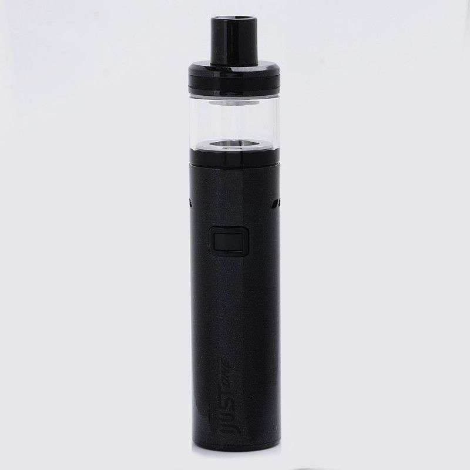

E-PAPIEROSY?... CO TO?
 E-papieros (elektroniczny inhalator nikotyny, EIN) – zasilane akumulatorem urządzenie inhalacyjne dające użytkownikowi podobne wrażenia jak przy paleniu tradycyjnych papierosów. Urządzenie powoduje zamianę roztworu inhalacyjnego na wdychany przez użytkownika aerozol (zamiast dymu wdychanego przy paleniu papierosów). Roztwór inhalacyjny (tzw. e-liquid) składa się zazwyczaj z glikolu propylenowego, gliceryny, aromatów oraz nikotyny w różnym stężeniu (od 0 do 24 mg/ml). Czasami dodaje się także do roztworu inhalacyjnego niewielkie ilości wody demineralizowanej oraz etanolu.
Obecna generacja e-papierosów najczęściej przypomina z wyglądu gruby długopis. Odchodzi się od wyglądu przypominającego zwykłego papierosa. Na rynku znaleźć można także modele imitujące fajkę, cygaro itp. Z badań wynika, że wielu długoterminowych użytkowników EIN zaczynało od prostego zestawu startowego zawierającego najprostszy model elektronicznego inhalatora nikotyny, by w dłuższej perspektywie zacząć używać bardziej skomplikowanych urządzeń.
Podstawowa zasada działania e-papierosa to podgrzanie e-liquidu (zazwyczaj zawierającego nikotynę) do temperatury, w której przechodzi on w stan lotny i może być wdychany. W e-papierosie nie zachodzi spalanie, dzięki czemu nie wydziela się silny zapach i powstaje bardzo niewiele substancji ubocznych.